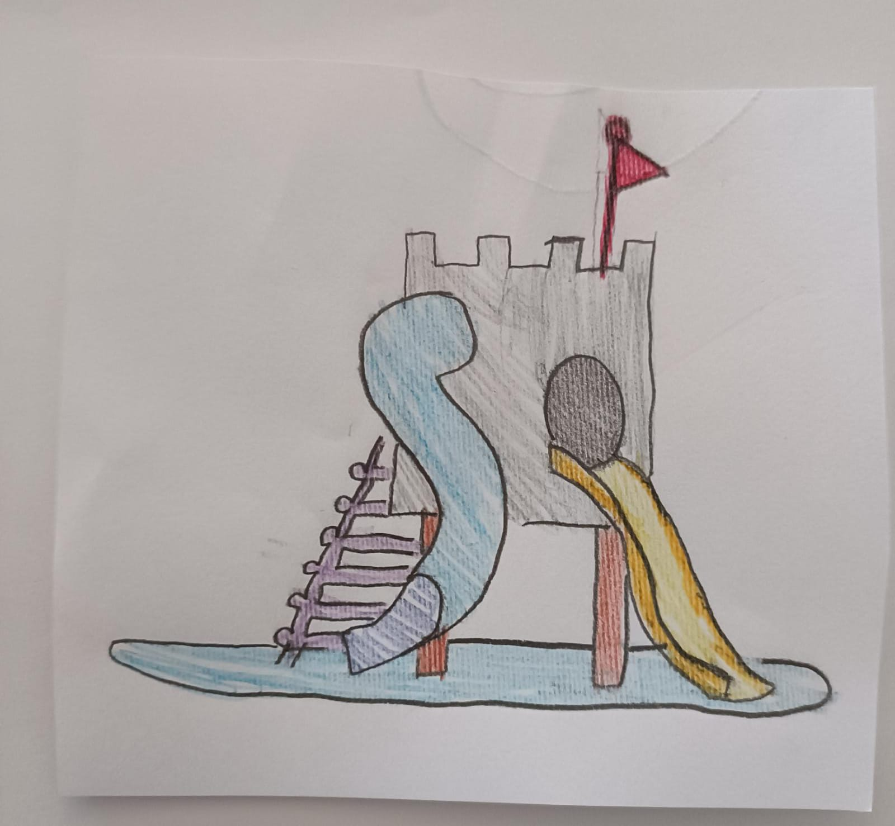
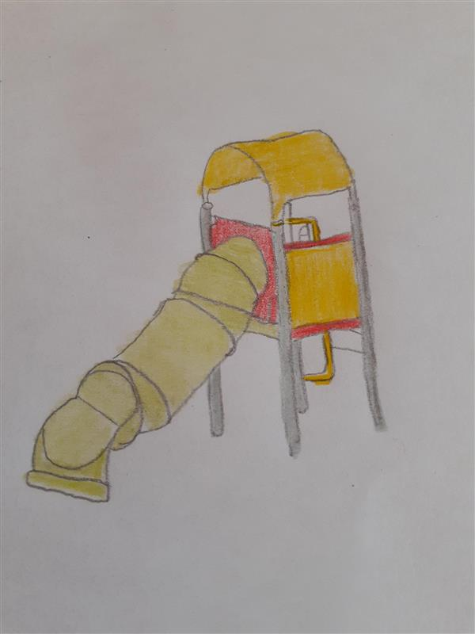
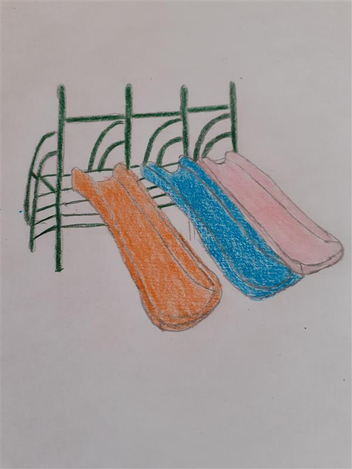
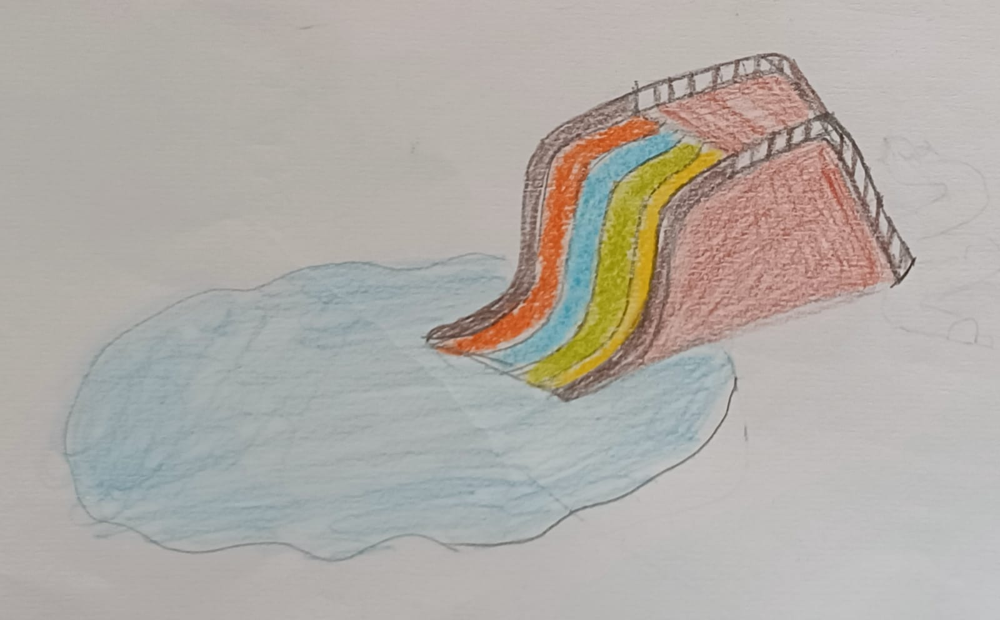
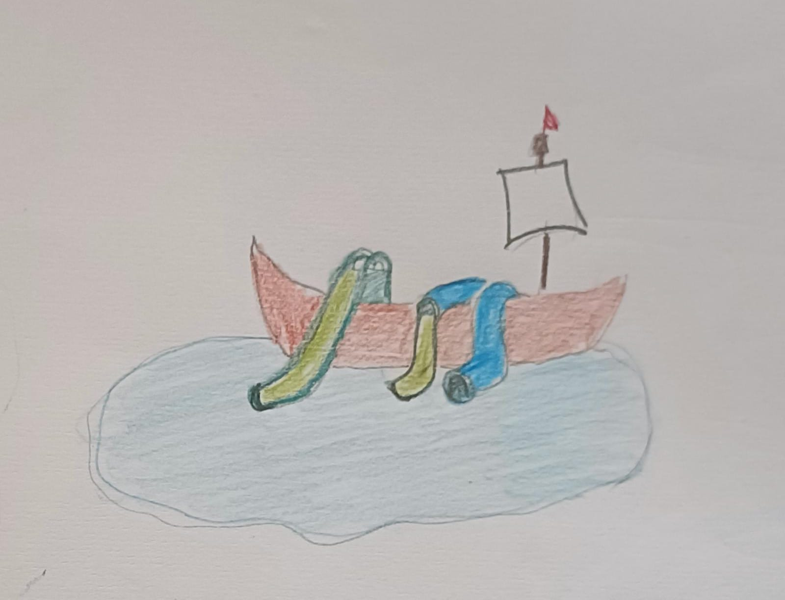
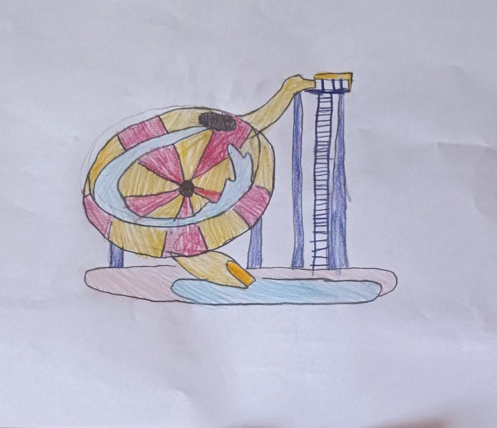
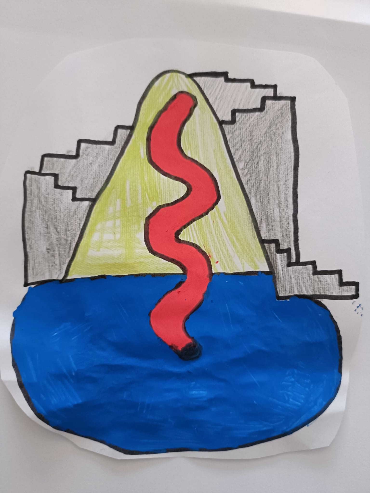
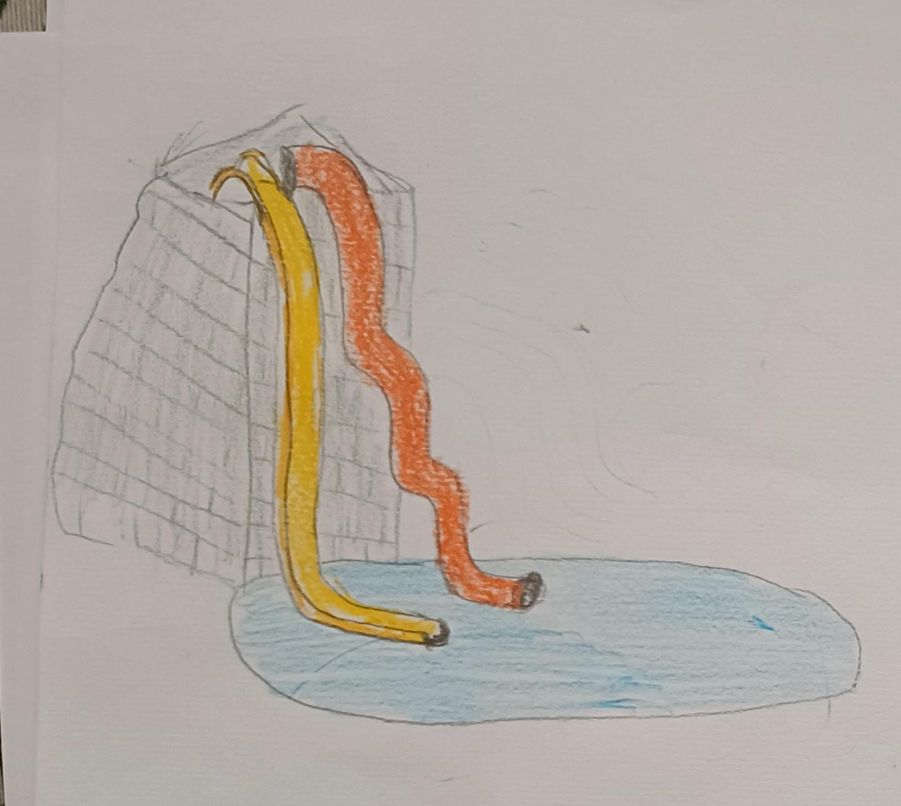

ZONA INFANTIL
|

EL CASTILLO: Una atracción para los más pequeños donde los niños podrán sentirse como caballeros,
princesas, reinas o reyes a la vez que se divierten en el agua
|

LA ORUGA: Otra atracción para los pequeños de la casa, en la que disfrutarán de un tobogán con forma
de tubo que se parece a una linda oruguita que termina en la piscina infantil
|

EL TRIPLETE: Preparados, listos, ya!!!! Los disfrutarán haciendo carreras en este tobogán con tres
pistas de diferentes colores para llegar primero a la piscina de los niños
|
ZONA FAMILIAR
|

EL ARCOIRIS FUGAZ: ¿Queréis competir toda la familia? Una versión más grande que El Triplete,
con más carriles, más velocidad y cómo no, más diversión
|

EL BARCO: Tierra a la vista!!! La atracción para los intrépidos piratas que no temen a los tiburones.
Disfruta de esta estructura con forma de barco con 3 toboganes
|

EL TORBELLINO: ¡Alerta meteorológica! ¡Un tornado se acerca! Preparen sus colchonetas y a dar vueltas
y vueltas y vueltas...
|
ZONA PARA LOS INTRÉPIDOS
|

LA COLINA: Si te gusta escalar... escala esta montaña y tírate por el gran tobogán desde la cima para
descender a toda velocidad
|

X-TREME: ¿Eres valiente? ¿Te gustan las emociones fuertes? No hay duda, el X-Treme será tu favorito,
la atracción más radical del parque, con un tobogán Kamikaze y un tobogán de tubo de 20 metros de altura
|